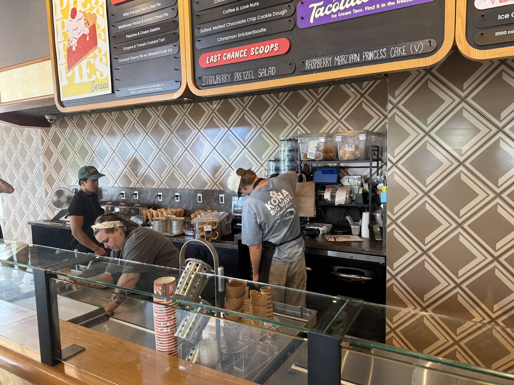

Reading the Flavor Board at Salt & Straw

Third stop, not twenty minutes after the panini at St Honoré, which is either poor planning or exactly the right amount of planning depending on how you feel about a Sunday built entirely around eating. Salt & Straw's Lake Oswego location sits a block or two from the bakery, handmade-ice-cream lettering across the window, a scoop counter with a line of cones stacked and ready behind the glass.

The board
Two stars, and the reason isn't the shop or the service — it's the flavors themselves, and I want to be specific about why rather than just leave a low number sitting there unexplained. Salt & Straw's whole identity is built on flavors that read more like tasting-menu ideas than ice cream: Honey Lavender. Arbequina Olive Oil. Strawberry Honey Balsamic with Black Pepper. Pear and Blue Cheese. A seasonal "Summer Pies" series running alongside the year-round list. It's a genuinely inventive menu, and I understand why it's built a following — but I like my ice cream traditional, and this board is built almost entirely around not being that. Olive oil and black pepper are savory ingredients doing their level best to convince you they belong in a cone, and for me they don't quite close the sale.
What this isn't
This isn't a knock on the craft. The ingredients are clearly real — whole coffee beans and dried fruit visible in the display jars at the counter, a "classic flavors" section that does include a straightforward double-fold vanilla and a sea-salt-caramel-ribbon for anyone who wants something more familiar. It's a genuine, well-made shop doing exactly what it set out to do. It's just not built for a traditionalist, and I'm enough of one that the board itself was the disappointment more than any single scoop.
The practical bit
Salt & Straw — 100 A Ave, Lake Oswego, Oregon 97034. 📍 Get directions
Hours: 11 AM – 11 PM daily.
Worth knowing: if you're after something closer to traditional, the "Classic Flavors" side of the board (double-fold vanilla, sea salt with caramel ribbons) is a safer bet than the seasonal specials.